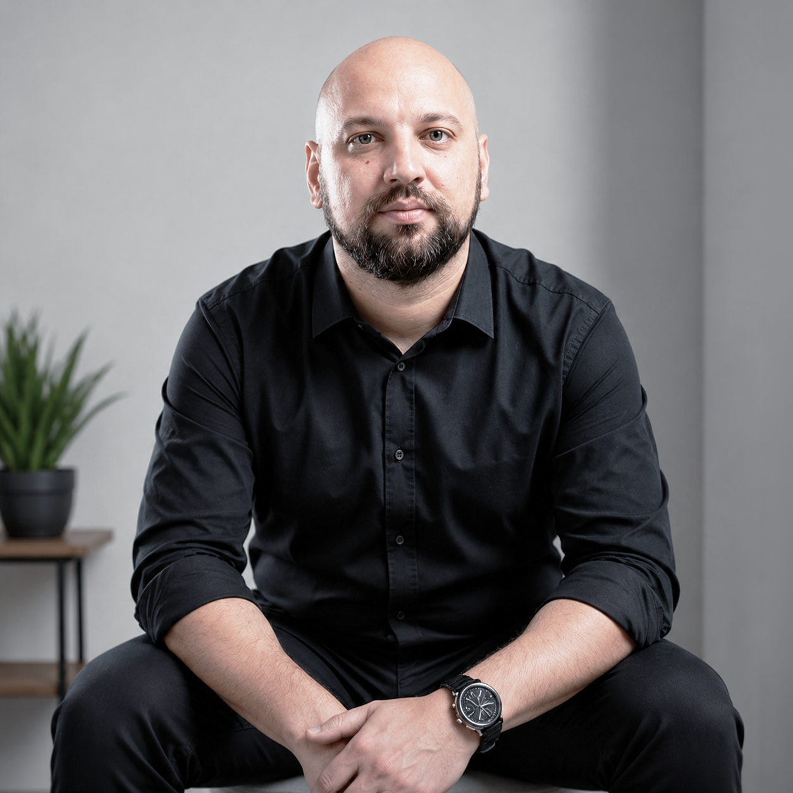

I’m a graphic designer with over 15 years of experience in B2B communication. I turn complex services and products into clear, persuasive materials that support marketing and sales: from campaign key visuals and social media creatives, through brochures and presentations, to trade fair stands and websites.
For 12 years at Trans.eu I was responsible for the visual communication of a B2B platform for the transport industry. I designed marketing campaigns, paid online ad creatives, key visuals for events and conferences, and stands for the largest industry trade fairs in Poland and abroad. I also designed web application interfaces (SaaS), and I currently run my own studio creating visual identities and marketing materials for B2B clients. My UI/UX background helps me design with users and conversion in mind: landing pages, newsletters and performance creatives.
In my daily work I use AI tools such as Adobe Firefly, ChatGPT and Claude. They speed up the creative process and let me quickly prepare multiple design variants. I follow design trends and adapt them to each brand, and I run projects independently, from brief to publication-ready files. Feel free to get in touch.